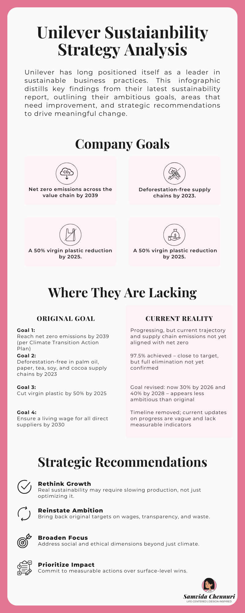
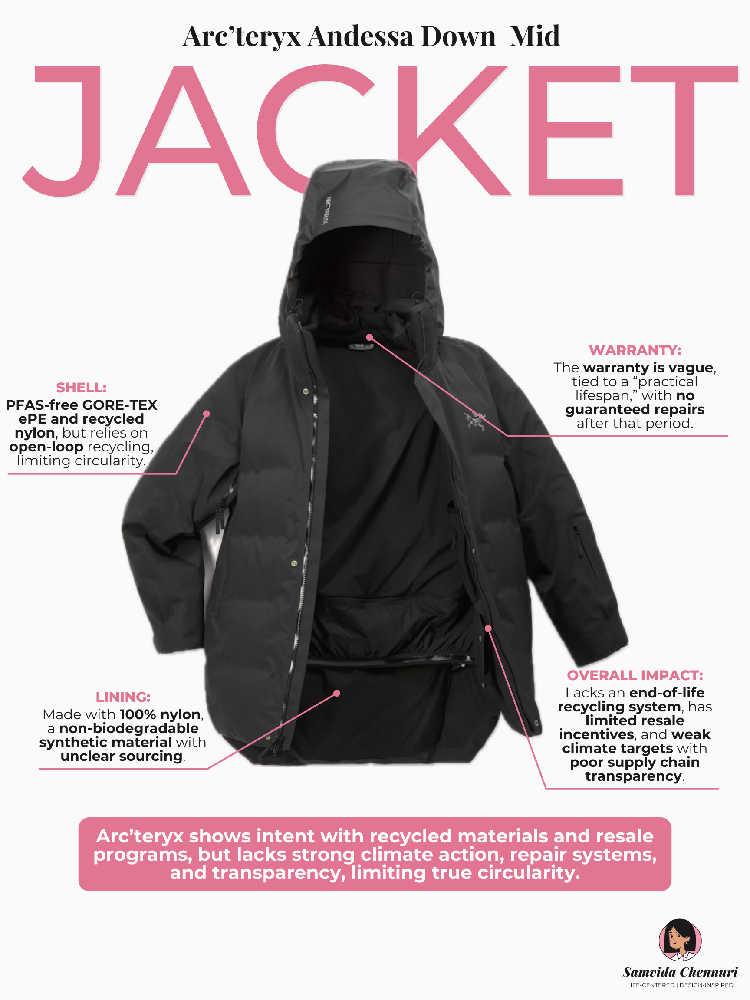

Reading Between the Green Lines
My Role:
Research, Analysis, and Data Visualization
Focus
Sustainable Strategy Analysis, Materiality Analysis, Life-cycle Assessment
Corporate Goals vs Reality
Unilever Sustainability Strategy Analysis
Unilever presents ambitious goals in its sustainability reports, but how do they hold up in practice? This infographic contrasts stated targets with real-world progress and offers strategic recommendations for deeper impact.

Click to view detailed Unilever sustainability analysis
Visualizing Circularity in Outerwear
Arc'teryx Andessa Down Jacket
A teardown of Arc’teryx’s sustainability claims through a product lens. This infographic examines material choices, repair systems, end-of-life solutions, and the brand’s transparency around climate action.

Click to view detailed Arc'teryx product analysis
×
×